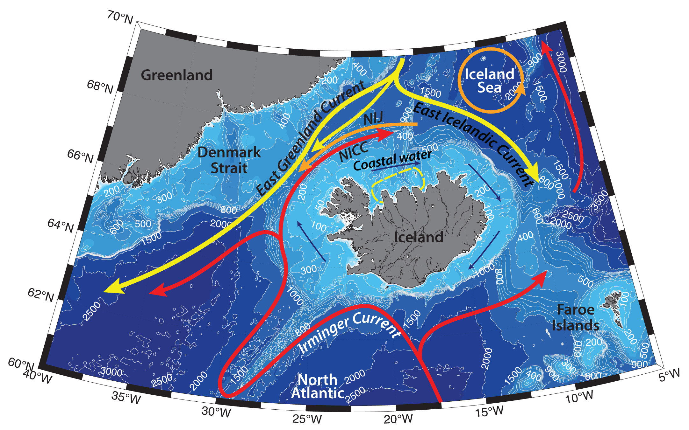

Schematic water circulation patterns and geographical place names in the Iceland region. Adopted from Vilhjalmsson, 2002; Rudels et al., 2002; Oskarsson et al., 2009; Våge et al., 2013, Brakstad et al., 2019. Dashed line marks the studied region.
Hydrography around Iceland and in the Iceland Sea is determined by the characteristics of Atlantic Water currents, deep convection in the Nordic Seas and flow of the dense waters across the Greenland-Scotland ridge, advection of Polar Water by the East Greenland Current, as well as the atmospheric forcing. All the main currents in the region are generally steered by topography, separated by strong hydrographic fronts in the region. Coastal waters around Iceland are prone to small-scale variability under the influence of river run-off, winds, and tidal currents (e.g. Vilhjalmsson, 2002; Oskarsson et al., 2009; Renfrew et al., 2019). Bottom waters and local benthos communities may also be influenced by geothermal activity of the Mid-Atlantic Ridge.
General circulation pattern in the Nordic Seas is cyclonic, comprised of northward flowing Atlantic Water in the east and southward flowing East Greenland Current in the west. Two separate largescale gyres – Greenland and Iceland – are known to exist in Greenland and Iceland Seas respectively.
Warm and salty Atlantic Water (AW; T>0°C) flows into the Nordic Seas through the Faroe–Shetland Strait, over the Faroe–Iceland Ridge and through the Denmark Strait around Iceland, and dominates the hydrography of the south and west coasts. In the Denmark Strait, close to the Vestfirdir peninsula, Irminger Current, carrying AW northwards, splits into two branches. The larger volume of AW turns westwards towards Greenland, while the other branch flows eastwards onto the shelf north and, to some extent, east of Iceland. The latter is known as the North Icelandic Irminger Current (NICC; e.g. Vilhjalmsson, 2002). Some studies (e.g. Oskarsson et al., 2009) note, that during “warm” years NICC turns east and flows into the northern coastal areas and further into the Icelandic Sea, while in “cold” years it may turn back west into the Denmark Strait. The variability of Atlantic inflow in the coastal Iceland waters largely determines the hydrography of the region, its environmental variability and ecosystem dynamics.
On its way to the Arctic Basin Atlantic Water is cooled significantly due to heat loss to the atmosphere and mixing with the surrounding water (e.g. with East Icelandic Current or Polar Surface Water, or Polar Deep Water): e.g., from 9°C and 35.3 psu in the Faroe–Shetland Strait to 1–3°C and 35.0 psu in the Fram Strait. AW is the important source of heat, salt and nutrients for the region, as well as Atlantic species (McClimans et al., 2012), it contributes sufficiently to the formation of the upper layer in the central part of the Nordic Seas. Since the late 1980s, the temperatures of the inflowing into the Norwegian and Greenland Seas AW has increased, leading to the warming of surface and intermediate layer of the Greenland and Iceland Gyres (McClimans et al., 2012). AW inflow into the northern Iceland shelf waters boosts mixing and creates favorable conditions for the longer-lasting period of phytoplankton production and richer stocks of zooplankton during warm periods (Vilhjalmsson, 2002).
The cold East Greenland Current (EGC) is the main conduit for waters exiting the Arctic Ocean. EGC flows from the Fram Strait southwards along the East Greenland shelf to the Cape Farewell and carries sea ice, as well as cold and fresh Polar Surface Water (-1.9<T<0°C), Atlantic Water both recirculated in the Basin (also known as Arctic Atlantic Water; T<~1°C; e.g. Rudels et al., 2002) and in the Fram Strait (e.g. Bourke et al. 1988), and cold Polar Deep Water out from the Arctic Basin (e.g. Rudels et al., 2002). On its way along the Greenland slope the EGC interacts with waters from the Greenland and Iceland Seas and incorporates additional intermediate water masses.
EGC bifurcates eastwards just to the north of Iceland, this branch is known as the East Icelandic Current (EIC). It is warmer and saltier compared to the EGC, due to an admixture of warmer Atlantic water from the south as well as from the mixed waters of the Iceland Sea to the north. The East Icelandic Current flows southeastwards along the outer slope of the shelf off north and northeast Iceland and is thought to dissipate in the western Norwegian Sea, north of the Faroes. To the southeast of Iceland a strong oceanographic frontal zone has often been observed near Stokksnes, separating the cold East Icelandic Current and the warm Irminger Current (Oskarsson et al., 2009).
Coastal Water originates from the continental runoff and transformation of the mentioned above water masses on the Icelandic shelf. General Coastal Water circulation is anticyclonic around Iceland.
The Nordic Seas is a key region of winter convection and subsequent dense deep water formation, which is later feeding the deepest part of Atlantic meridional overturning circulation (AMOC), spilling across the troughs in the Greenland–Scotland Ridge (e.g. Gebbie and Huybers 2010; Pickart et al., 2017). The largest overflow plume of dense water flows through the Denmark Strait from the Nordic Seas on the western side of Iceland, and is known as the Denmark Strait Overflow Water (DSOW; e.g., Jochumsen et al. 2017). The mean transport of the overflow water exiting Denmark Strait is ~3 – 3.5 Sv southwards (e.g. Harden et al. 2016; Pickart et al., 2017). Nearly one-third of DSOW is the dense water (Jonsson and Valdimarsson, 2004), originated from the northwestern part of the Iceland Sea, where the deepest and densest convection occurs, as well as from farther north in the Greenland Sea (Messias et al. 2008; Vage et al., 2015; Pickart et al., 2017). This water has a potential density anomaly larger than 28.03 kg m−3 (Vage et al. 2011) and is carried southwards by the North Icelandic Jet (NIJ; ~ 1 Sv; e.g. Jonsson and Valdimarsson, 2004; Pickart et al., 2017). The NIJ is centered around 650 m isobath of the Iceland shelf and has larger velocities middepth (Pickart et al., 2017). The EGC accounts for the remaining part of the DSOW (Harden et al. 2016).
Convection in the Greenland Sea contributes water to the overflows both east and west of Iceland, in particular for waters denser than 28.03 kg m−3, although the preferred pathways of the dense water are not fully known (Brakstad et al., 2019). On the eastern side of Iceland, the overflow through the Faroe Bank Channel (FBC), is comprised from intermediate and deep water masses from the Nordic Seas, as well as upper Polar Deep Water formed in the Arctic Ocean (Jeansson et al., 2017). Brakstad with coauthors (2019) suggest, that if future convection is reduced, either as a result of decreased heat fluxes (e.g., Moore et al. 2015) or because of enhanced near-surface freshwater content (e.g., from increased ice melt), it could impact the overflows both east and west of Iceland and limit the supply of the densest water to the lower limb of the AMOC.